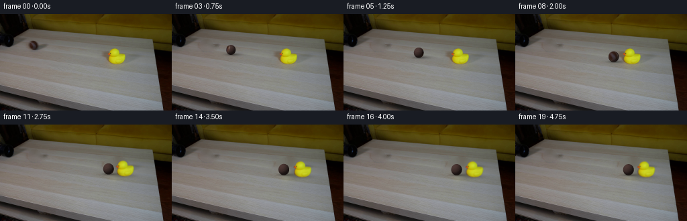
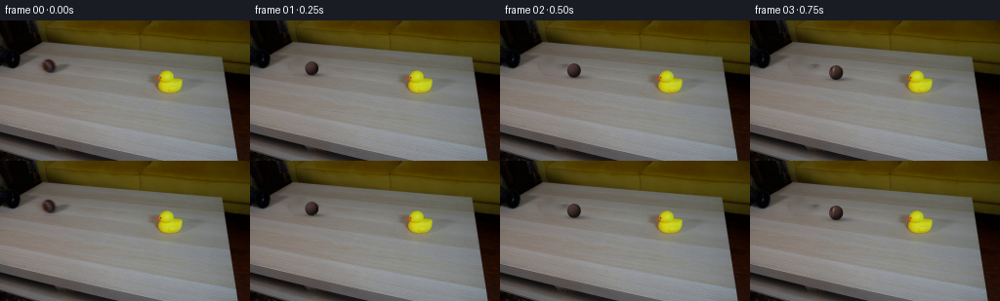

CODING AGENTS AS PIXEL WORLD MODELS
traex/GPT-6.1-Sol · 0009
点击播放 · 原生 RGB 像素
逐轮保存的候选
回放视频、检查图与代码变化。
每份候选均可单独播放。实际图片检查记录在下方工具轨迹中。
候选 01播放与检查图
点击播放 · 原生 RGB 像素


展开代码变化
--- 上一保存版本
+++ 本次保存版本
@@ -0,0 +1,179 @@
+from pathlib import Path
+import math
+import numpy as np
+from PIL import Image
+import cv2
+from scipy.ndimage import map_coordinates, gaussian_filter, binary_dilation
+import artifact_io
+
+ROOT = Path(__file__).resolve().parent
+W,H = 256,144
+original = np.array(Image.open(ROOT/'first_frame.png').convert('RGB'))
+yy,xx = np.mgrid[:H,:W].astype(np.float64)
+
+# Restore only the small portions of the table revealed by the moving objects.
+ball_hole = np.zeros((H,W), np.uint8)
+cv2.ellipse(ball_hole,(51,46),(10,9),0,0,360,255,-1)
+cv2.ellipse(ball_hole,(60,50),(11,4),0,0,360,255,-1)
+ball_bg = cv2.inpaint(original,ball_hole,5,cv2.INPAINT_TELEA)
+
+# A chroma matte retains the photographed rubber toy, including its orange bill.
+r,g,b = original.astype(float).transpose(2,0,1)
+chroma = np.maximum(np.minimum(r-b,g-b), .85*(r-b))
+zone = (xx>=158)&(xx<=188)&(yy>=50)&(yy<=75)
+# Subpixel outline, with full opacity in the interior.
+duck_alpha = np.clip((chroma-27)/70,0,1)*zone
+# Eliminate table tint outside the contiguous object.
+core = ((r-b>55)&((g-b>42)|(r-g>25))&zone).astype(np.uint8)
+num, labels, stats, _ = cv2.connectedComponentsWithStats(core,8)
+idx = 1+np.argmax(stats[1:,cv2.CC_STAT_AREA])
+near = binary_dilation(labels==idx,iterations=1)
+duck_alpha *= near
+hole = np.zeros((H,W),np.uint8)
+cv2.ellipse(hole,(174,63),(20,15),0,0,360,255,-1)
+cv2.ellipse(hole,(161,63),(8,11),0,0,360,255,-1)
+cv2.ellipse(hole,(175,75),(16,5),0,0,360,255,-1)
+clean = cv2.inpaint(ball_bg,hole,6,cv2.INPAINT_TELEA)
+# Decontamination of the photographed antialiased silhouette.
+a = duck_alpha[...,None]
+duck_rgb = np.clip((original.astype(float)-(1-a)*clean.astype(float))/np.maximum(a,.05),0,255)
+duck_pm = duck_rgb*a
+
+# Lighting and a material texture anchored to the sphere rather than the screen.
+S=4
+sy,sx=np.mgrid[:H*S,:W*S].astype(np.float64)
+sx=(sx+.5)/S-.5; sy=(sy+.5)/S-.5
+rng = np.random.default_rng(91)
+texture = gaussian_filter(rng.normal(0,1,(192,384)),.6)
+texture/=max(texture.std(),.01)
+
+# The initial object's observed material gives the rolling ball its dark brown tone.
+# Rotating the measured surface texture makes its markings turn with the roll.
+xc,yc,rx0,ry0=50.,46.5,6.7,7.0
+L=np.array([-.48,-.62,.62]); L/=np.linalg.norm(L)
+
+# Material patch on the original sphere. Keep illumination separate from rotation.
+ty,tx=np.mgrid[0:64,0:64].astype(float)
+u=(tx+0.5)/32-1; v=(ty+0.5)/32-1
+z=np.sqrt(np.maximum(0,1-u*u-v*v))
+light=.32+.63*np.maximum(0,L[0]*u+L[1]*v+L[2]*z)
+coords=np.array([yc+v*ry0,xc+u*rx0])
+observed=np.stack([map_coordinates(original[:,:,i].astype(float),coords,order=1,mode='nearest') for i in range(3)],-1)
+material=observed/np.maximum(light[...,None],.4)
+# Rim samples are mixed with the background in the source image; exclude these.
+inside=u*u+v*v<.77
+avg=np.median(material[inside],axis=0)
+material=np.where(inside[...,None],material,avg)
+material=gaussian_filter(material,(.55,.55,0))
+
+
+def shadow(img,cx,cy,wx,wy,opacity):
+ mask=np.exp(-.5*(((xx-cx)/wx)**2+((yy-cy)/wy)**2))
+ return img*(1-opacity*mask[...,None])
+
+
+def add_duck(img,dx,dy,angle):
+ # Clockwise rocking about the broad base, with the same photographic texture.
+ pivot=np.array([175.,72.5])
+ c,s=np.cos(angle),np.sin(angle)
+ qx=xx-(pivot[0]+dx); qy=yy-(pivot[1]+dy)
+ srcx=c*qx+s*qy+pivot[0]
+ srcy=-s*qx+c*qy+pivot[1]
+ coords=np.array([srcy,srcx])
+ alpha=map_coordinates(duck_alpha,coords,order=1,mode='constant',cval=0)
+ rgb=np.stack([map_coordinates(duck_pm[:,:,k],coords,order=1,mode='constant',cval=0) for k in range(3)],-1)
+ img=shadow(img,171+dx,73.5+dy,12,2.1,.17)
+ img=shadow(img,163+dx,67+dy,6.2,4.5,.17)
+ return img*(1-alpha[...,None])+rgb
+
+
+def ball_layer(cx,cy,radius,roll):
+ # Supersampled spherical silhouette and directional lighting.
+ u=(sx-cx)/(radius*.958); v=(sy-cy)/radius
+ q=u*u+v*v
+ inside=q<=1
+ z=np.sqrt(np.maximum(0,1-q))
+ # Rotation axis perpendicular to its straight projected tabletop path.
+ theta=roll
+ axis=np.array([-.171,.985,0.])
+ cs,ss=np.cos(theta),np.sin(theta)
+ dot=axis[0]*u+axis[1]*v
+ # Inverse Rodrigues rotation (surface coordinates).
+ ux=u*cs-axis[1]*z*ss+axis[0]*dot*(1-cs)
+ vy=v*cs+axis[0]*z*ss+axis[1]*dot*(1-cs)
+ zz=z*cs-(axis[0]*v-axis[1]*u)*ss
+ matcoords=np.array([(vy+1)*32-.5,(ux+1)*32-.5])
+ surf=np.stack([map_coordinates(material[:,:,k],matcoords,order=1,mode='nearest') for k in range(3)],-1)
+ # A coherent softly textured brown reverse side, consistent with the observed hemisphere.
+ back=np.broadcast_to(avg,surf.shape).copy()
+ observed_weight=np.clip((zz-.05)/.35,0,1)[...,None]
+ surf=surf*observed_weight+back*(1-observed_weight)
+ lon=np.arctan2(ux,zz)
+ lat=np.arcsin(np.clip(vy,-1,1))
+ texcoords=np.array([(lat/np.pi+.5)*191,(lon/(2*np.pi)+.5)*383])
+ fuzz=map_coordinates(texture,texcoords,order=1,mode='wrap')
+ illum=.32+.63*np.maximum(0,L[0]*u+L[1]*v+L[2]*z)
+ # The characteristic narrow curved tennis-ball stitching, subdued by the dark exposure.
+ seamdist=np.abs(vy-.48*np.cos(2*lon+.25))
+ seam=np.exp(-(seamdist/.038)**2)*.26
+ seamcolor=np.array([119.,105.,89.])
+ surf=surf*(1-seam[...,None])+seam[...,None]*seamcolor
+ colors=np.clip(surf*illum[...,None]+fuzz[...,None]*1.7,0,255)
+ premult=colors*inside[...,None]
+ rgb=premult.reshape(H,S,W,S,3).mean((1,3))
+ alpha=inside.astype(float).reshape(H,S,W,S).mean((1,3))
+ return rgb,alpha
+
+
+def dynamics(t):
+ # A continuously rolling ball: constant table direction, mild rolling resistance.
+ # The lightweight broad-bottomed duck slides and rocks after a single impact.
+ collision=2.20
+ speed=51.5
+ decel=3.4
+ xc=50+speed*collision-.5*decel*collision**2
+ if t<=collision:
+ x=50+speed*t-.5*decel*t*t
+ return x,0.,0.
+ dt=t-collision
+ vb=13.0; fb=6.4
+ tb=min(dt,vb/fb)
+ x=xc+vb*tb-.5*fb*tb*tb
+ vd=30.; fd=21.
+ td=min(dt,vd/fd)
+ dx=vd*td-.5*fd*td*td
+ angle=.31*np.exp(-2.65*dt)*np.sin(9.0*dt)
+ return x,dx,angle
+
+
+def main():
+ frames=[original.copy()]
+ for i in range(1,20):
+ t=i/4
+ bx,dx,angle=dynamics(t)
+ slope=.173
+ by=46.5+(bx-50)*slope
+ radius=7+(bx-50)*.012
+ if dx==0:
+ img=ball_bg.astype(float).copy()
+ else:
+ img=add_duck(clean.astype(float).copy(),dx,dx*slope,angle)
+ # Contact shadow broadens as the ball comes toward the camera.
+ img=shadow(img,bx+3.8,by+radius-.7,radius*1.12,1.55,.25)
+ img=shadow(img,bx+.8,by+radius-.2,radius*.65,.8,.22)
+ roll=(bx-50)/7.7
+ rgb,alpha=ball_layer(bx,by,radius,roll)
+ img=img*(1-alpha[...,None])+rgb
+ frames.append(np.clip(np.rint(img),0,255).astype(np.uint8))
+ frames=np.stack(frames)
+ assert np.array_equal(frames[0],original)
+ artifact_io.save(frames,ROOT)
+ Image.fromarray(clean).save(ROOT/'.tmp'/'restored_table.png')
+ Image.fromarray(np.uint8(np.clip(duck_rgb,0,255))).save(ROOT/'.tmp'/'duck_material.png')
+ np.save(ROOT/'.tmp'/'duck_alpha.npy',duck_alpha)
+ print('saved',frames.shape,frames.dtype,'material RGB',avg)
+ for i in [0,1,4,8,9,10,12,16,19]:
+ print('frame',i,'ball x / duck shift / duck angle',dynamics(i/4))
+
+if __name__=='__main__':
+ main()
可观测工具轨迹
实际执行的命令与返回图片。
命令 1exit 0
/bin/bash -lc 'ls -la && cat prompt.txt && cat GENERATION_RULES.md'
命令 2exit 0
/bin/bash -lc "cat artifact_io.py; python - <<'PY'
from PIL import Image
import numpy as np
im=np.array(Image.open('first_frame.png').convert('RGB')); print(im.shape)
# colorful spatial summarize tiles average RGB
for y in range(0,144,6):
print(f'{y:3}:', ' '.join('%02x%02x%02x'%tuple(im[y:y+6,x:x+8].mean((0,1)).astype(int)) for x in range(0,256,8)))
PY"命令 3exit 0
/bin/bash -lc "python - <<'PY'
import numpy as np
from PIL import Image
im=np.array(Image.open('first_frame.png')).astype(float)
print('LUMA top left every 1x2:')
gray=im.mean(2)
for y in range(0,65):
print('%02d '%y+''.join(' .:-=+*#%@'[int(min(9,v/160*9))] for v in gray[y,:85:2]))
print('duck region classified pixels: (K dark, Y yellow, o orange, t shadow, . table)')
for y in range(40,82):
s=''
for x in range(150,193):
r,g,b=im[y,x];
if r+g+b<100: c='K'
elif r>g*1.15 and b<60: c='o'
elif g>1.3*b and r>1.3*b: c='Y' if r+g>260 else 'y'
elif r+g+b<280:c='t'
else:c='.'
s+=c
print('%02d '%y+s)
print('pixels bounding black region, rows')
for y in range(0,58,2):
xx=np.where(gray[y,:85]<40)[0];print(y,xx.tolist())
PY"命令 4exit 0
/bin/bash -lc "python - <<'PY'
from PIL import Image
import numpy as np
im=np.array(Image.open('first_frame.png'))
for y in range(32,57):
print('y',y, ' '.join('%3d/%3d/%3d'%tuple(im[y,x]) for x in range(38,61)))
print('dark region colored luminance symbols with range 0-105:')
for y in range(0,55):
print('%02d '%y+''.join('0123456789ABCDEF'[min(15,int(v)//7)] for v in im[y,:60].mean(-1)))
PY"命令 5exit 0
/bin/bash -lc "python - <<'PY'
import numpy as np
from PIL import Image
im=np.array(Image.open('first_frame.png'))
print('Ball RGB patch (y39:55 x40:60). chars represent brown(P), pink/purple(V), gray(=), darkbrown(d), dark(k)')
for y in range(36,59):
s=''
for x in range(36,70):
r,g,b=im[y,x].astype(float)
if r<55 and g<39: c='k'
elif r>1.45*g and r-g>17: c='d' if g<43 else 'P'
elif b>g+2: c='V'
elif r-g>11:c='b'
elif r+g+b<270:c='t'
else:c='.'
s+=c
print(y,s)
print('Duck RGB pixels')
for y in range(50,77):
print('%02d'%y,' '.join('%03x'%int(((int(im[y,x,0])//16)<<8) | ((int(im[y,x,1])//16)<<4) | (int(im[y,x,2])//16)) for x in range(158,190)))
PY"命令 6exit 0
/bin/bash -lc "python - <<'PY'
import importlib.util
for s in ['cv2','scipy','numpy','PIL']:
print(s, bool(importlib.util.find_spec(s)))
# horizontal scene near ball and duck, quantized darkness + chroma
from PIL import Image
import numpy as np
im=np.array(Image.open('first_frame.png'))
for y in range(20,80,2):
s=''
for x in range(0,232,2):
r,g,b=im[y,x].astype(float)
if r>g*1.2 and b<70: c='B'
elif g>b*1.6 and r>b*1.6: c='Y'
else:c=' .:-=+*#%@'[min(9,int((r+g+b)/3/160*9))]
s+=c
print('%02d '%y+s)
PY"命令 7exit 0
/bin/bash -lc "cat > generate.py <<'PY'
from pathlib import Path
import math
import numpy as np
from PIL import Image
import cv2
from scipy.ndimage import map_coordinates, gaussian_filter, binary_dilation
import artifact_io
ROOT = Path(__file__).resolve().parent
W,H = 256,144
original = np.array(Image.open(ROOT/'first_frame.png').convert('RGB'))
yy,xx = np.mgrid[:H,:W].astype(np.float64)
# Restore only the small portions of the table revealed by the moving objects.
ball_hole = np.zeros((H,W), np.uint8)
cv2.ellipse(ball_hole,(51,46),(10,9),0,0,360,255,-1)
cv2.ellipse(ball_hole,(60,50),(11,4),0,0,360,255,-1)
ball_bg = cv2.inpaint(original,ball_hole,5,cv2.INPAINT_TELEA)
# A chroma matte retains the photographed rubber toy, including its orange bill.
r,g,b = original.astype(float).transpose(2,0,1)
chroma = np.maximum(np.minimum(r-b,g-b), .85*(r-b))
zone = (xx>=158)&(xx<=188)&(yy>=50)&(yy<=75)
# Subpixel outline, with full opacity in the interior.
duck_alpha = np.clip((chroma-27)/70,0,1)*zone
# Eliminate table tint outside the contiguous object.
core = ((r-b>55)&((g-b>42)|(r-g>25))&zone).astype(np.uint8)
num, labels, stats, _ = cv2.connectedComponentsWithStats(core,8)
idx = 1+np.argmax(stats[1:,cv2.CC_STAT_AREA])
near = binary_dilation(labels==idx,iterations=1)
duck_alpha *= near
hole = np.zeros((H,W),np.uint8)
cv2.ellipse(hole,(174,63),(20,15),0,0,360,255,-1)
cv2.ellipse(hole,(161,63),(8,11),0,0,360,255,-1)
cv2.ellipse(hole,(175,75),(16,5),0,0,360,255,-1)
clean = cv2.inpaint(ball_bg,hole,6,cv2.INPAINT_TELEA)
# Decontamination of the photographed antialiased silhouette.
a = duck_alpha[...,None]
duck_rgb = np.clip((original.astype(float)-(1-a)*clean.astype(float))/np.maximum(a,.05),0,255)
duck_pm = duck_rgb*a
# Lighting and a material texture anchored to the sphere rather than the screen.
S=4
sy,sx=np.mgrid[:H*S,:W*S].astype(np.float64)
sx=(sx+.5)/S-.5; sy=(sy+.5)/S-.5
rng = np.random.default_rng(91)
texture = gaussian_filter(rng.normal(0,1,(192,384)),.6)
texture/=max(texture.std(),.01)
# The initial object's observed material gives the rolling ball its dark brown tone.
# Rotating the measured surface texture makes its markings turn with the roll.
xc,yc,rx0,ry0=50.,46.5,6.7,7.0
L=np.array([-.48,-.62,.62]); L/=np.linalg.norm(L)
# Material patch on the original sphere. Keep illumination separate from rotation.
ty,tx=np.mgrid[0:64,0:64].astype(float)
u=(tx+0.5)/32-1; v=(ty+0.5)/32-1
z=np.sqrt(np.maximum(0,1-u*u-v*v))
light=.32+.63*np.maximum(0,L[0]*u+L[1]*v+L[2]*z)
coords=np.array([yc+v*ry0,xc+u*rx0])
observed=np.stack([map_coordinates(original[:,:,i].astype(float),coords,order=1,mode='nearest') for i in range(3)],-1)
material=observed/np.maximum(light[...,None],.4)
# Rim samples are mixed with the background in the source image; exclude these.
inside=u*u+v*v<.77
avg=np.median(material[inside],axis=0)
material=np.where(inside[...,None],material,avg)
material=gaussian_filter(material,(.55,.55,0))
def shadow(img,cx,cy,wx,wy,opacity):
mask=np.exp(-.5*(((xx-cx)/wx)**2+((yy-cy)/wy)**2))
return img*(1-opacity*mask[...,None])
def add_duck(img,dx,dy,angle):
# Clockwise rocking about the broad base, with the same photographic texture.
pivot=np.array([175.,72.5])
c,s=np.cos(angle),np.sin(angle)
qx=xx-(pivot[0]+dx); qy=yy-(pivot[1]+dy)
srcx=c*qx+s*qy+pivot[0]
srcy=-s*qx+c*qy+pivot[1]
coords=np.array([srcy,srcx])
alpha=map_coordinates(duck_alpha,coords,order=1,mode='constant',cval=0)
rgb=np.stack([map_coordinates(duck_pm[:,:,k],coords,order=1,mode='constant',cval=0) for k in range(3)],-1)
img=shadow(img,171+dx,73.5+dy,12,2.1,.17)
img=shadow(img,163+dx,67+dy,6.2,4.5,.17)
return img*(1-alpha[...,None])+rgb
def ball_layer(cx,cy,radius,roll):
# Supersampled spherical silhouette and directional lighting.
u=(sx-cx)/(radius*.958); v=(sy-cy)/radius
q=u*u+v*v
inside=q<=1
z=np.sqrt(np.maximum(0,1-q))
# Rotation axis perpendicular to its straight projected tabletop path.
theta=roll
axis=np.array([-.171,.985,0.])
cs,ss=np.cos(theta),np.sin(theta)
dot=axis[0]*u+axis[1]*v
# Inverse Rodrigues rotation (surface coordinates).
ux=u*cs-axis[1]*z*ss+axis[0]*dot*(1-cs)
vy=v*cs+axis[0]*z*ss+axis[1]*dot*(1-cs)
zz=z*cs-(axis[0]*v-axis[1]*u)*ss
matcoords=np.array([(vy+1)*32-.5,(ux+1)*32-.5])
surf=np.stack([map_coordinates(material[:,:,k],matcoords,order=1,mode='nearest') for k in range(3)],-1)
# A coherent softly textured brown reverse side, consistent with the observed hemisphere.
back=np.broadcast_to(avg,surf.shape).copy()
observed_weight=np.clip((zz-.05)/.35,0,1)[...,None]
surf=surf*observed_weight+back*(1-observed_weight)
lon=np.arctan2(ux,zz)
lat=np.arcsin(np.clip(vy,-1,1))
texcoords=np.array([(lat/np.pi+.5)*191,(lon/(2*np.pi)+.5)*383])
fuzz=map_coordinates(texture,texcoords,order=1,mode='wrap')
illum=.32+.63*np.maximum(0,L[0]*u+L[1]*v+L[2]*z)
# The characteristic narrow curved tennis-ball stitching, subdued by the dark exposure.
seamdist=np.abs(vy-.48*np.cos(2*lon+.25))
seam=np.exp(-(seamdist/.038)**2)*.26
seamcolor=np.array([119.,105.,89.])
surf=surf*(1-seam[...,None])+seam[...,None]*seamcolor
colors=np.clip(surf*illum[...,None]+fuzz[...,None]*1.7,0,255)
premult=colors*inside[...,None]
rgb=premult.reshape(H,S,W,S,3).mean((1,3))
alpha=inside.astype(float).reshape(H,S,W,S).mean((1,3))
return rgb,alpha
def dynamics(t):
# A continuously rolling ball: constant table direction, mild rolling resistance.
# The lightweight broad-bottomed duck slides and rocks after a single impact.
collision=2.20
speed=51.5
decel=3.4
xc=50+speed*collision-.5*decel*collision**2
if t<=collision:
x=50+speed*t-.5*decel*t*t
return x,0.,0.
dt=t-collision
vb=13.0; fb=6.4
tb=min(dt,vb/fb)
x=xc+vb*tb-.5*fb*tb*tb
vd=30.; fd=21.
td=min(dt,vd/fd)
dx=vd*td-.5*fd*td*td
angle=.31*np.exp(-2.65*dt)*np.sin(9.0*dt)
return x,dx,angle
def main():
frames=[original.copy()]
for i in range(1,20):
t=i/4
bx,dx,angle=dynamics(t)
slope=.173
by=46.5+(bx-50)*slope
radius=7+(bx-50)*.012
if dx==0:
img=ball_bg.astype(float).copy()
else:
img=add_duck(clean.astype(float).copy(),dx,dx*slope,angle)
# Contact shadow broadens as the ball comes toward the camera.
img=shadow(img,bx+3.8,by+radius-.7,radius*1.12,1.55,.25)
img=shadow(img,bx+.8,by+radius-.2,radius*.65,.8,.22)
roll=(bx-50)/7.7
rgb,alpha=ball_layer(bx,by,radius,roll)
img=img*(1-alpha[...,None])+rgb
frames.append(np.clip(np.rint(img),0,255).astype(np.uint8))
frames=np.stack(frames)
assert np.array_equal(frames[0],original)
artifact_io.save(frames,ROOT)
Image.fromarray(clean).save(ROOT/'.tmp'/'restored_table.png')
Image.fromarray(np.uint8(np.clip(duck_rgb,0,255))).save(ROOT/'.tmp'/'duck_material.png')
np.save(ROOT/'.tmp'/'duck_alpha.npy',duck_alpha)
print('saved',frames.shape,frames.dtype,'material RGB',avg)
for i in [0,1,4,8,9,10,12,16,19]:
print('frame',i,'ball x / duck shift / duck angle',dynamics(i/4))
if __name__=='__main__':
main()
PY
python generate.py"命令 8exit 0
/bin/bash -lc "python - <<'PY'
from PIL import Image
import numpy as np
im=np.array(Image.open('first_frame.png')).astype(float)
clean=np.array(Image.open('.tmp/restored_table.png')).astype(float)
a=np.load('.tmp/duck_alpha.npy')
print('matte bounds', np.where(a>0)[1].min(),np.where(a>0)[1].max(),np.where(a>0)[0].min(),np.where(a>0)[0].max(),'max area',a.sum())
for y in range(49,78):
print('%02d '%y+''.join(' .:-=+*#%@'[min(9,int(a[y,x]*9))] for x in range(155,191)))
print('RGB averages source; restoration; generated duck zone')
for name in ['first_frame.png','.tmp/restored_table.png','frames/09.png','frames/12.png','frames/19.png']:
f=np.array(Image.open(name))
print(name, 'orig duck', f[50:78,156:189].mean((0,1)), 'below duck',f[76:80,164:186].mean((0,1)), 'ball',f[41:53,45:57].mean((0,1)))
for y in range(46,83,2):
s=''
for x in range(145,224):
r,g,b=f[y,x].astype(float)
if r-b>55 and g-b>42:c='Y'
elif r-g>25 and r-b>55:c='o'
elif r+g+b<130:c='b'
elif r+g+b<210:c='d'
elif r+g+b<290:c='t'
else:c='.'
s+=c
print(y,s)
PY"命令 9exit 0
/bin/bash -lc "python - <<'PY'
import numpy as np
from PIL import Image
im=np.array(Image.open('first_frame.png'))
# Relative chroma from the tabletop gray and pipe's slightly pinkish surface, at one-pixel precision.
for y in range(16,58):
s=''
for x in range(0,85):
r,g,b=im[y,x].astype(float)
if r+g+b<80:c='@'
elif r+g+b<150:c='#'
elif b>g+2:c='p'
elif r-g>14:c='b'
elif g-b>20:c='y'
elif r+g+b<245:c='o'
elif r+g+b<285:c='-'
elif r+g+b<315:c='='
else:c='.'
s+=c
print('%02d '%y+s)
PY"命令 10exit 0
/bin/bash -lc "python - <<'PY'
from pathlib import Path
import numpy as np
from PIL import Image
p=np.load('pixels.npz')['pixels']; print(p.shape,p.dtype)
frames=np.stack([np.array(Image.open(f'frames/{i:02d}.png').convert('RGB')) for i in range(20)])
assert frames.shape==(20,144,256,3) and frames.dtype==np.uint8
assert np.array_equal(frames[0],np.array(Image.open('first_frame.png').convert('RGB')))
for i in range(1,20):
d=np.any(frames[i]"'!=frames[i-1],axis=2)
print(i,'"'changed pixels',int(d.sum()), 'bounds', (np.where(d)[1].min(),np.where(d)[0].min(),np.where(d)[1].max(),np.where(d)[0].max()))
print('artifacts',[(f.name,f.stat().st_size) for f in [Path('pixels.npz'),Path('index.html')]])
PY"保存候选 1 份；完成命令 10 次；可验证图片返回 0 张。原始 API 响应与完整日志保留在本地。